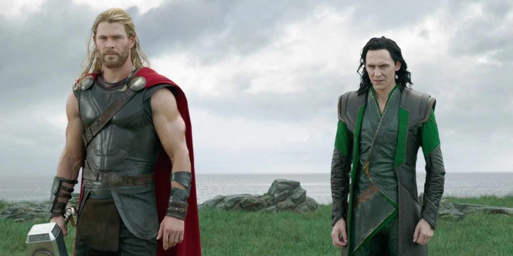

Loki (Tom Hiddleston) heerst nu over Asgard, nadat hij zijn vader heeft verbannen, maar niemand beseft welke gevaren deze verbanning met zich meebracht. Nu Odin (Anthony Hopkins) er niet meer is om Asgard te beschermen, weet Hela (Cate Blanchett), de godin van de dood, Asgard binnen te dringen en de macht over te nemen. Loki en Thor (Chris Hemsworth) worden verbannen naar de planeet Sakaar. Niet alleen moeten ze weten te ontsnappen van Sakaar, maar moeten ze Hela weten te verslaan voordat ze Asgard en Midgard (de aarde) weet te vernietigen.
